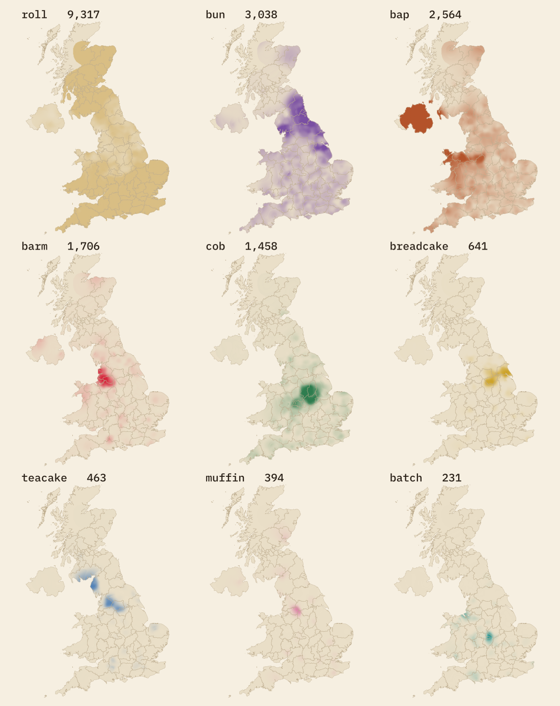

What do you call a bread roll? I mapped 20,038 answers from two dialect surveys, drew the lines where one word gives way to another, and checked them against YouGov, Wikipedia and the names of 614,437 food businesses.
Le Baguette Index once rang 6,500 French bakeries to find out where pain au chocolat becomes chocolatine, and drew the line across the map of France. Britain has a fiercer version of that argument, and more than two sides. Ask for a roll in Nottingham and you may be corrected: it is a cob. In Bolton it is a barm, in Newcastle a bun, in Belfast a bap, in Coventry a batch and in Hull a breadcake.
Two dialect projects have asked thousands of people the question and published their answers on maps: Our Dialects (11,609 answers) and the Dialect and Heritage Project's Great Big Dialect Hunt (8,463 answers, placed where each person grew up). I put the two together, smoothed them, and drew the lines. Then I asked whether the high street agrees, using the name of every food business the Food Standards Agency inspects.
The colour shows the word most people give in each place, after smoothing the answers around it. Paler colour means a narrower lead. The black lines are where one word overtakes another; the red dashed line is where roll falls below half of all answers. Switch to a single word to see its share, or turn on the hexagons to see the raw counts (only hexagons with at least 10 answers are shown).
Roll is the national default: 46% of all answers. But it is not evenly spread. Across southern England about three answers in four say roll (75% in the band around Salisbury Plain), and nothing else comes close. By the band that runs from Manchester to Hull it is down to 24%. The red dashed line on the map marks where it drops below half. That line runs from Cardigan Bay, south of Birmingham and Coventry, to the Lincolnshire coast. North of it the map shatters into regional words, and roll only wins a clear majority again around the Solway and in Scotland.
Only 40% of answers from England come from places where roll has a majority. In Scotland the figure is 93%: 94% of the 536 Scottish answers say roll, which fits the morning roll and the Glasgow roll shop. Wales sits in between at 66%, with bap strong in the north. Northern Ireland is the one place where roll is a minority word everywhere: 88% of its 191 answers say bap.
The other lines are shorter and sharper. Cob holds a block of the East Midlands around Nottingham, Derby and Leicester, with an outlier around Birmingham. Barm holds Greater Manchester, south Lancashire and Merseyside, and muffin a pocket east of Manchester around Oldham and Rochdale. Teacake leads patches of Cumbria and north Lancashire, and around Burnley and Bradford. Breadcake leads around Sheffield and Hull. Bun runs up the north-east from the Humber to Northumberland, with an outpost in Cumbria. Bap takes north Wales, Stoke and Staffordshire, and all of Northern Ireland. Batch leads in just one small spot, around Coventry.
The leading-word map hides the runners-up. These small maps show each word's own share, from nothing to 60% or more.

The two surveys were run separately, with different pictures, wording and people, so they are a fair check on each other. County by county they agree closely on where each word is strong. Across the 44 counties with at least 30 answers in both, the correlation between their shares is 0.99 for barm, 0.98 for breadcake, 0.95 for bun and 0.95 for cob. Bap is the loosest at 0.68.
They differ in level, not in place. Dialect and Heritage gets more roll everywhere (53% against 42%), probably because it offered "bread roll" as a separate choice, and it gets far less barm (3% against 13%), largely because Our Dialects has many more answers from around Manchester. So the leading word matches in 34 of the 44 counties; most of the mismatches are counties where roll edges ahead in Dialect and Heritage but a regional word leads in Our Dialects.
In 2018 YouGov asked almost 25,000 adults in England which name they use most often, and published county-level statements in ten-point bands. I set each one beside the two surveys. Our Dialects lands inside YouGov's band for 18 of the 32 statements and within ten points for 7 more. Where it misses, it is always higher: for example bun in North Yorkshire, Cumbria and Lincolnshire, barm in Merseyside and bap in Staffordshire. Dialect and Heritage lands inside the band for 13 and within ten points for 11 more.
The three cob majorities hold up: cob is the answer of 59% of people from Leicestershire in Our Dialects and 70% in Nottinghamshire, and of close to half or more in Dialect and Heritage. YouGov's "something else" in South Yorkshire and the East Riding turns out to be breadcake, as YouGov guessed.
The Dialect and Heritage team wrote that younger speakers "do not seem to use either term", cob or batch. Their published answers carry an age band, so I tested it. In the three counties where cob leads in the other survey (Derbyshire, Leicestershire and Nottinghamshire), 42% of Dialect and Heritage answers from people under 25 say cob, against 61% of those aged 45 to 64. That is a real but modest slope: the odds of cob rise by a factor of 1.11 per decade of age (p = 0.04).
Batch is harder to judge. In Merseyside, Warwickshire and the West Midlands, where batch reaches at least 4% in Our Dialects, 4.8% of the under 25s say batch against 9.0% of those aged 45 to 64, but there are only 84 answers in the youngest group and the trend is not distinguishable from chance (p = 0.61). Barm, bun and bap show no clear age slope in their heartlands.
Wikipedia's bread articles make confident claims about where each word belongs. Most of them survive contact with the surveys. 84% of all barm answers come from Merseyside, Greater Manchester and Lancashire, which hold 19% of all answers. Breadcake is 29 times as common in Yorkshire and Nottinghamshire as elsewhere; batch 36 times as common in Warwickshire, the West Midlands, Cheshire and Merseyside.
One claim fails. The article on the bun says it is a savoury roll in Northern Ireland. In the survey answers from Northern Ireland, bun is 2.1%; bap is 88%. The Belfast bap is the better guide.
Business names are a different kind of evidence: small, commercial and often a pun. I searched the names of all 614,437 food businesses in the Food Standards Agency's hygiene ratings, and 60,691 named bakeries, cafes and takeaways in OpenStreetMap, for whole-word uses of each roll word, and read the matches by eye to throw out the wrong ones: wok and roll, sushi hand rolls, BAPS temples, Korean bap, corn on the cob, small batch coffee and piece of cake.
The signal is thin. Only 461 FSA businesses (7.5 in every 10,000) use a roll word at all, against 1,244 with a sandwich word. Barm, the fourth most popular word in the surveys, appears in just 3 FSA names, all in the North West. So most words cannot carry a map on their own.
Cob is the exception. 38 of the 68 distinct cob names (56%) are in Derbyshire, Leicestershire and Nottinghamshire, which hold only 4.7% of the UK's food businesses. The cob shop is a real Midlands institution. Batch behaves the same way on a tiny scale: 8 of the 10 batch names, mostly "batch bars", are in the West Midlands and Warwickshire, and the other two are in neighbouring Leicestershire. Bap does not: the bap is the punning word of the high street, with "Big Baps" and "Get Your Baps Out" from Devon to Inverness.
The sandwich words are a stronger signal than the roll words. Of the 206 distinct butty names, 45% are in the five North West counties, which hold 11% of food businesses; there, butty makes up 27% of names with a sandwich word, against 14% across the UK. Greater London, with 13% of all food businesses, has 2 butty names. A 2020 Foodhub poll found that 58% of people call chips in bread a chip butty, so the word is widely known, but the high street still keeps it in the North.
Two smaller notes. Stottie, the Geordie flatbread, is in 7 names, two on Tyneside and the rest, oddly, in the Midlands and Lothian. And 0 of the buttery names are in Aberdeen: the business butteries are tea rooms, cafes and sandwich bars named after the old provisions room or after butter, not the Aberdeen rowie.
Volunteers, not a sample. Both surveys are online questionnaires that anyone could answer. They over-represent people who like dialect quizzes and places where the projects were publicised. Our Dialects has 536 answers from Scotland and 368 from Wales; Dialect and Heritage covers England only. The smoothing hides gaps but cannot fill them.
Different questions. The surveys used different pictures and options. I merged "bread roll" and "roll", but Our Dialects' teacake and muffin have no match in Dialect and Heritage, which offered "something else". Location means where the person grew up in Dialect and Heritage; Our Dialects does not say whether its points are where people live or where they grew up.
One word per person. Many people use two words for different breads, such as a soft barm and a crusty roll. A single answer per person flattens that.
Business names are puns. A name is chosen to be memorable, and "On a Roll" and "Big Baps" are jokes before they are dialect. I kept puns that still name a bread roll and dropped those that do not; the full list with reasons is in the data. Some FSA businesses have no address (home caterers, market traders) and are placed at the middle of their local authority.
Copyright. The survey answers belong to their projects and are not openly licensed. I publish only counts for hexagons and counties with at least 10 answers, and smoothed maps. For the answers themselves, go to the projects' own maps.
Surveys. 11,609 located answers from the Our Dialects bread map and 8,463 from the Dialect and Heritage Project's "Roll with it" map, read from the projects' published web maps on 27 October 2026. 34 answers outside the UK were dropped. Each answer was placed in a county (ceremonial counties in England, preserved counties in Wales, council areas in Scotland, and Northern Ireland as one unit).
Smoothing and lines. Answers were counted on a 2 km grid by word and smoothed with a Gaussian kernel. The width was chosen by leave-one-cell-out prediction from 4 to 32 km; 8 km predicted best. Where fewer than 10 weighted answers were within reach, the width was widened step by step to 12, 16, 24 and 32 km, and cells that still fell short were left blank. Each word's share is its smoothed count over the total, pulled very slightly towards the national share. The black lines are where the leading word changes (the two leading words have equal shares). The red dashed line is where roll's share is one half. Halving or doubling the kernel width leaves the leading word unchanged at 94% and 91% of answer locations.
Checks. County shares from each survey are compared with Pearson correlations (counties with at least 30 answers in both). YouGov's published bands and Wikipedia's claims are compared with county shares. The age test is a logistic regression of giving the word on the middle of each age band, among Dialect and Heritage answers in the word's heartland as defined by Our Dialects.
Business names. Every name in the FSA Food Hygiene Rating Scheme open data (all local authorities, extract of 23 October 2026) and every named OpenStreetMap shop=bakery, amenity=cafe and amenity=fast_food in the UK was searched for whole-word roll and sandwich words. I read every match for the rarer words and the full lists for roll, bap, cob, batch and piece, and wrote exclusion rules with reasons. Businesses without coordinates were placed at the middle of their postcode district or local authority.